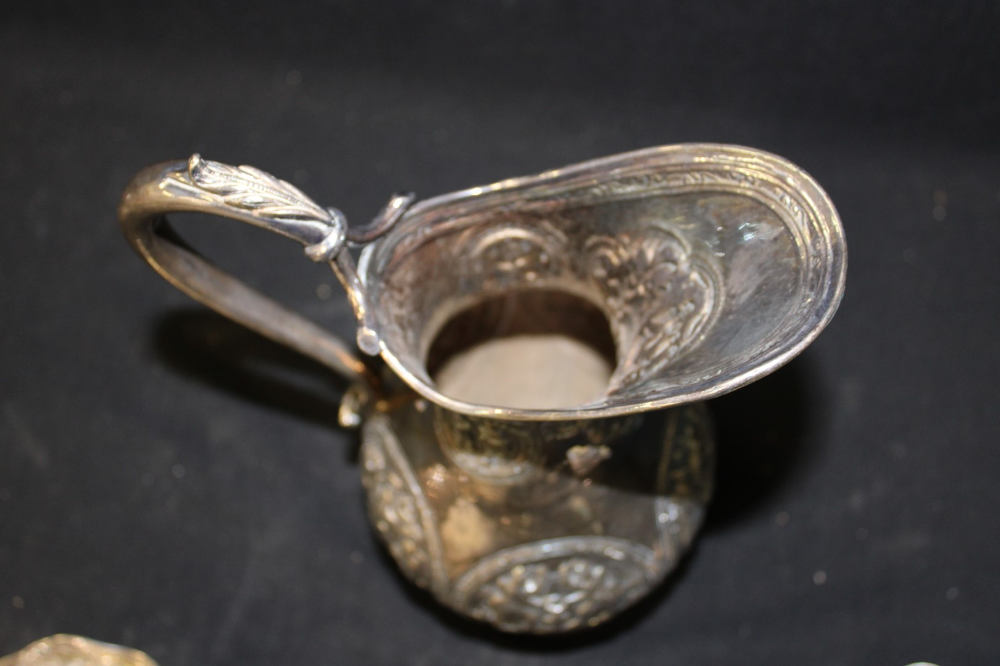

A simple meal for all children
and young animals
- 1000mL Cream of any ruminant
- 500g Ice or any of the common varieties of snow
- Aphid Honey, to taste
- First, combine the cream with 2.3 - 1,200 drops of aphid honey (fresh)
- Let settle for 2 - 3 hours in a cool and quiet place
- Place ice material in a strainer, and prepare a chilled silver caraffe
- Pour the liquid mixture over the ice, and serve from the caraffe immediately
Tip: The ice material can be saved for reuse in subsequent batches of childream